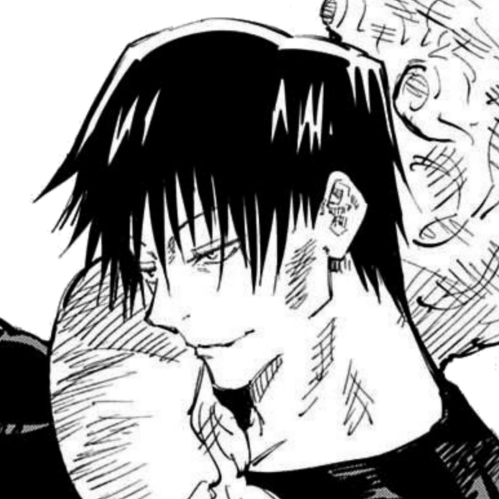

<ion-header>
  <ion-toolbar color="tertiary">
    <ion-title>Toji Fushiguro</ion-title>
  </ion-toolbar>
</ion-header>

<ion-content class="ion-padding">
  <div class="perfil">  
    
  </div>
<ion-list>
  <ion-item button routerLink="/cursos-alumno">
    <ion-icon slot="start" name="book-outline"></ion-icon>
    <ion-label>Ver Cursos</ion-label>
  </ion-item>
  <ion-item button routerLink="/scan-qr">
    <ion-icon slot="start" name="qr-code-outline"></ion-icon>
    <ion-label>Escanear QR</ion-label> 
  </ion-item>
  <ion-item button routerLink="/cursos-alumno">
    <ion-icon slot="start" name="person-outline"></ion-icon>
    <ion-label>Ver asistencia</ion-label>
  </ion-item>
  <ion-item button routerLink="/cursos-alumno">
    <ion-icon slot="start" name="chatbox-ellipses-outline"></ion-icon>
    <ion-label>Ver notas</ion-label>
  </ion-item>
</ion-list> 
</ion-content>
